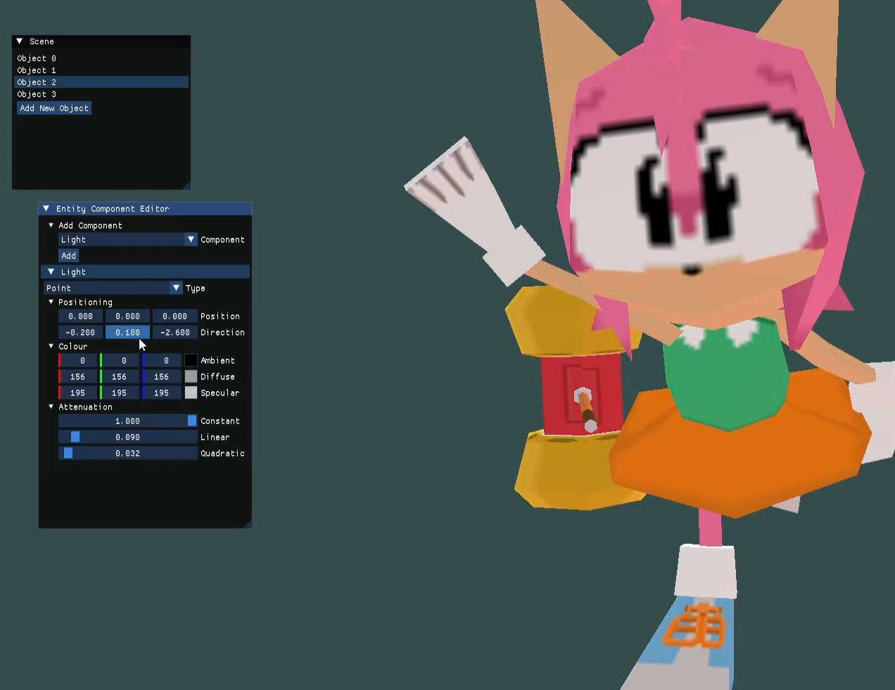

Undergraduate in Computer Science and Games Technology
A 3D Game Engine developed in C++ using OpenGL 3.3 Core Profile and GLFW.
Includes shader management, runtime camera and lighting control, and basic 3D rendering functionality.

This project is an assignment for ICT397: Advanced Game Engine Design and Programming. The assignment requires us to form teams of three and create a 3D game engine by facading all external APIs and enabling the use of Lua scripts for game logic.
Unfortunately, this project is not yet complete. As of now, the program implements an ECS, a Graphics facade, and a Physics facade. It is planned to include Lua scripting in the future.
The UI used is Dear ImGui, originally written by ocornut, and contributed to by nearly 500 people on Github.
The Graphics Facade is the core of the rendering system in my 3D Game Engine. It provides a unified interface for rendering objects, managing textures, and handling shaders, abstracting away the underlying graphics API. That being said, the program currently only supports OpenGL 3.3 Core Profile.
Key components include:
The factory interface of my Graphics sytem is shown below:
// Factory interface for Graphics Facade
virtual Shader* CreateShader(ShaderType shaderID, const std::string& vert, const std::string& frag) = 0;
virtual Shader* GetShader(ShaderType shaderID) const = 0;
virtual Texture* CreateTexture(const std::string& textureName, const std::string& typeName, const std::string& file) = 0;
virtual Texture* GetTexture(const std::string& textureName) const = 0;
virtual Model* LoadModel(const std::string& modelName, const std::string& file) = 0;
virtual void DrawModel(Model* model, Shader* shader, const ECS::TransformComponent& transform) = 0;
Do note, however, that strings are used as the lua reader, created by a team member, relies on using strings.
The Entity Component System (ECS) is the main system that controls the game engine. It is responsible for managing all entities in a scene, calling their Updates() and Render() functions every frame, and facilitating communication between components and external systems in the Game Engine.
Key components include:
The abstract Component interface is shown below
// Component.h
class Component
{
public:
virtual ~Component() = default;
virtual void Start() {};
virtual void Update(float deltaTime) {};
virtual void Render(Graphics::Graphics* graphics) {};
friend class ECS::Entity;
protected:
Entity* entity = nullptr;
};
Friend is used here as only an entity is allowed to change and access the entity that stores this component. Note that the destructor does not delete the entity pointer. This is because the Component only aggregates the Entity.
A short demo showcasing the engine's rendering and ECS system.